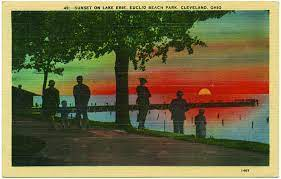
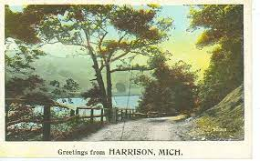

Postcards exist somewhere between photograph and painting- they are composite images of specific places and idealized images. They are translation of reality, presenting a constructed image that can vary from the actual place. The website invites visitors to consider the ways in which postcards shape our perceptions of place an time and the role they play in our personal and collective memories.